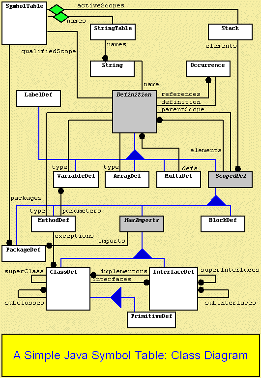

This page describes the classes used by our symbol table implementation. We present a table of all symbol table classes and a class diagram representing the relationships between these classes.
| SymbolTable | This is the main class in the org.apache.maven.jxr.java.src.symtab package. It provides a list of all packages that have been parsed, a stack representing the current lexical scope, and a table of unique Strings that have been read during the parse. This is the source of all symbol lookups; when resolving references, the requester asks the SymbolTable to look for a name, and it then searches the scope stack and the parsed packages to find the name. The SymbolTable also provides several methods to create instances of the other classes used in the symbol table package. |
| StringTableStringTable | When parsing a source file, the same strings usually occur again and again. Rather than store these Strings as separate String instances, we store each unique String in the StringTable for more efficient use of memory. |
| JavaStackStack | This is a java.util.Stack that keeps track of the nested scopes containing the current parse position. As Java constructs such as classes, methods and packages are recognized, the parser asks the SymbolTable to push a new containing scope on the stack. This stack provides an appropriate lookup mechanism for most names. When a name is read, the SymbolTable's lookup method will check each scope on the stack (from the most-nested scope to the outermost scope) to see if the name is found inside that scope. |
| Occurrence | This class identifies a line in a source file. It is used to store the location of definition for a class, interface, package, method or variable, and references to those constructs. |
| Definition | Every Java construct stored in the symbol table is a Definition. This class provides a common base for all symbol definitions, and includes information such as an Occurrence to track the location where the symbol was defined, a list of references to the symbol and its name. |
| ScopedDef | Some symbols can actually contain definitions of other symbols. For example, a class can contain definitions for variables and even other classes. These types of symbols are grouped into a common base class called a ScopedDef. ScopedDef keeps a list of other constructs that were defined within it. ScopedDef objects are the objects that are stored in the scope Stack for name lookup. |
| HasImportsHasImports | A further extension of a ScopedDef is one that HasImports. A HasImports object is one that makes use of Java's import statements to access names in other packages. HasImports keeps a list of packages and classes that are names in Java import statements. Classes and interfaces are the constructs that are grouped under this base class. |
| ClassDef | This is the definition of a Java Class. Classes can have a superclass (a reference to another ClassDef), a list of interfaces that it implements, and a list of other classes that extend it. |
| InterfaceDef | This represents a Java interface. Interfaces can have several super-interfaces, a list of classes that implement it, and a list of other InterfaceDefs that extend it. (Note that this class has been merged with ClassDef for this version of the cross-reference tool.) |
| PrimitiveDefPrimitiveDef | Java has several primitive types, such as
int, long and boolean. When variables or constants
of these types are passed to a method, widening
conversions can be performed to make the actual
parameters match the formal parameters of the
method. This behavior is very similar to the
process in which objects can be widened to their
superclass type to match a formal parameter type.
To take advantage of this similarity, PrimitiveDef
is a subclass of ClassDef, and each primitive
type is made a subclass of a primitive type to which it
can widen. Note that because method invocation is determined by parameter counts, these conversions are not used in the cross-reference tool. However, this inheritance relationship remains to demonstrate how you can benefit from watching for similarities in how symbols are handled. |
| BlockDef | This is a wrapper for an unnamed { } delimited block of statements. It provides a scope for nested variable definitions. |
| PackageDef | A package in Java is a collection of classes and interfaces. The contents of a package may be spread across several files, each with the same "package" statement at the top. Our SymbolTable collects PackageDef objects into a list of all packages that have been parsed or referenced. In addition, PackageDef objects can be referenced from import statements (which will be searched when a class is not found in any other context during symbol lookup.) |
| MethodDef | This represents a Java method. It contains a list of parameters and a return type (which is another Definition.) Methods can have the same name as other methods and variables in a class or interface; their parameters (or lack thereof) distinguish them from one another. |
| VariableDef | A variable defined in a Java source file. This can be a class or instance variable (defined within a class), a local variable (defined within a method) or a method parameter. Variables have a type associated with them. |
| ArrayDefArrayDef | An array in a Java source file. (Note that this class is not currently used, but is provided as an example of a possible extension to the tool.) |
| LabelDefLabelDef | A label that appears on a java loop. It can be referred to in a break or continue statement. |
| MultiDef | Java allows methods to have the same name as a variable or another method. The distinguishing features are the parameters (or lack thereof). When we find two symbols with the same name in a scope, we create a MultiDef, which contains a Vector that will keep track of all components that share that name. MultiDef provides lookup methods that distinguish which symbol is the correct symbol based on the number of parameters. |
Note that in the final tool, the ClassDef and InterfaceDef classes were combined into one. In an extended cross-reference tool, these would remain independent classes.
